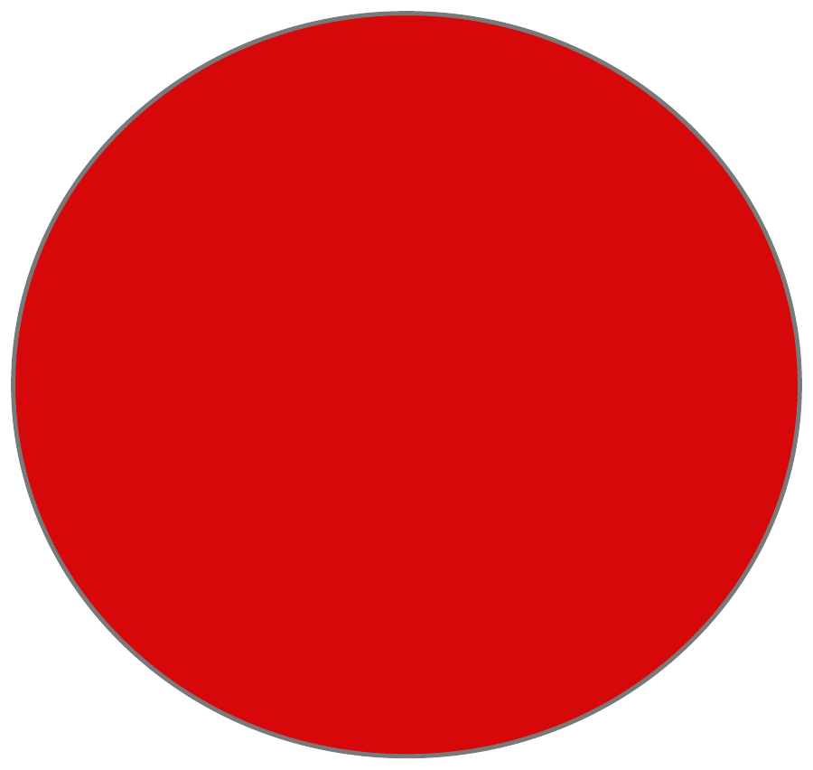

iWeb Archive
› GLOBAL JAPAN PROJECT AT PENN STATE
Archived page recovered from an iWeb site (c. 2008–2015). Links and course details may be out of date.
The Global Japan Project At Penn State
PROJECTS
Embedded Course
PROJECTS

The Global Japan Project
At Penn State
CHECK HERE FOR OUR UPCOMING INITIATIVES
PROJECTS
View original layout
Entries
Teaching Workshop
Collecting Asia/s
Study Abroad in Japan Scholarships
Teaching Development Impact Grants
Assistant Professor of Modern Japanese History
Embedded Courses
Visiting Research Fellow